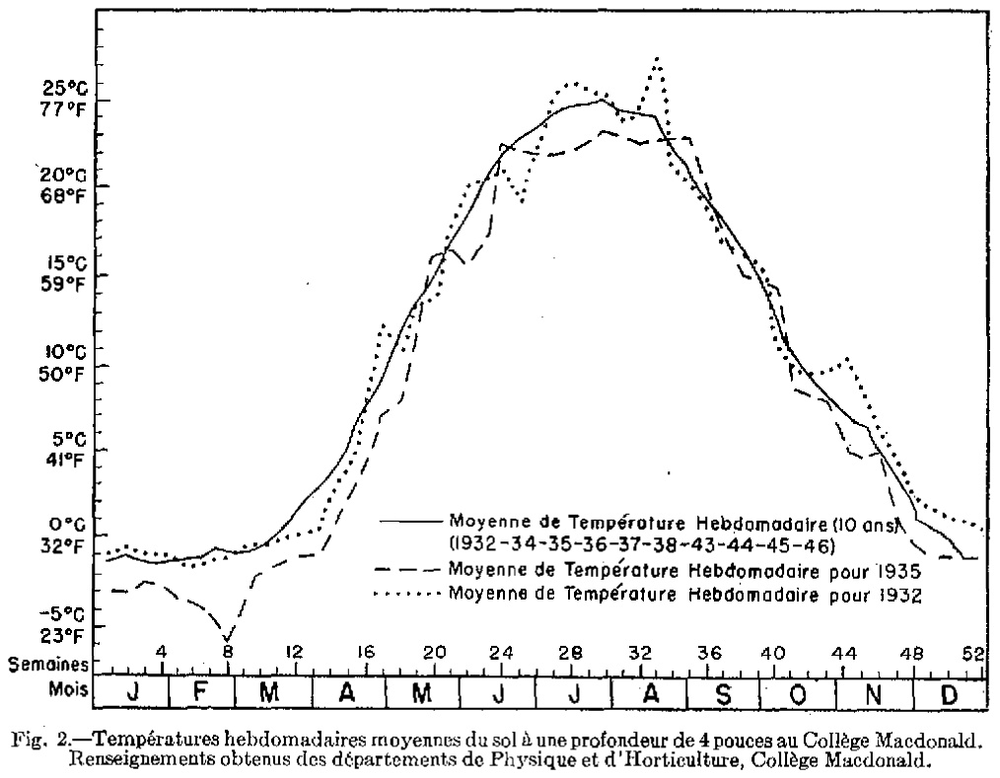

Identification & Caractéristiques Générales
La série Macdonald s'est développée sur des sédiments meubles d'origine alluvio-lacustre ou sur des matériaux argileux et loameux sus-jacents, d'une épaisseur variant généralement de 0,75 à 1 mètre (2,5 à 3,5 pieds), reposant en discontinuité sur un till calcaire profond. Les sédiments superficiels présentent des textures variées, allant du loam argileux et du loam sablo-argileux à l'argile, parfois entrecoupés de strates sableuses ou surmontés d'une mince couche de matière organique. Sur le plan géomorphologique, ces sols occupent des positions topographiques planes ou légèrement déprimées, souvent en association avec les séries Châteauguay. La pierrosité est généralement faible à nulle en surface et dans le profil, bien que la charge en fragments grossiers d'origine locale (Laurentides, Utica, Bourret) augmente à la base du profil au contact du till sous-jacent.
Le profil morphologique se caractérise par des conditions d'hydromorphie prononcée, le profil étant classé parmi les sols gleysoliques. Le drainage naturel est déficient (interne et externe lents), ce qui entraîne une perméabilité modérée à lente et la présence d'une nappe phréatique temporairement perchée en période de saturation. Le profil montre des teintes grisâtres dominantes accompagnées de nombreuses marbrures redoximorphes (taches de rouille), indicatives d'alternances d'oxydoréduction. La réaction du sol est neutre à faiblement alcaline, avec un pH supérieur à 7,0, en raison de l'influence des matériaux calcaires sous-jacents. La compacité de la couche arable peut être élevée, nécessitant une gestion rigoureuse pour éviter la compaction lors des interventions culturales.
En matière d'aptitudes agronomiques, la série Macdonald est mise en valeur principalement pour les grandes cultures, les cultures fourragères (foin de trèfle et de luzerne) et l'industrie laitière. En raison de son engorgement hydrique naturel, le sol présente des limitations majeures pour les cultures maraîchères, les petits fruits et les vergers, à moins d'être adéquatement aménagé. L'installation d'un réseau de drainage souterrain et de surface est indispensable pour optimiser la portance, permettre un ressuyage printanier hâtif et atteindre des rendements maximaux en céréales et en maïs fourrager. Le travail du sol doit être exécuté à un taux d'humidité adéquat pour préserver la structure de la couche arable, et le risque d'érosion hydrique demeure faible en raison de la topographie plane, bien que des apports sédimentaires colluviaux locaux puissent survenir.
Classification Taxonomique & Environnement Pédologique
| Ordre Pédologique | Gleysolique |
|---|---|
| Grand Groupe (SCSS) | Gleysol humique |
| Sous-Groupe Taxonomique | Gleysol humique orthique |
| Famille Pédologique | Loameuse, mixte sableux, alcalin (calcaire) |
| Mode de Dépôt Parental | Fluviatile sur morainique |
| Classe de Drainage Naturel | Mal drainé |
| Régime Thermique & Humidité | Doux / Perhumide |
Description Morphologique du Profil Type
Séquences génétiques des horizons pédologiques caractérisant le profil type représentatif de la série Macdonald :
Profil cultivé (agricole) — Comté de Argenteuil
✓ Source : Comté de Argenteuil — Page 83Couleur Munsell : Non précisée
Structure & Consistance : Polyédrique à granulaire
Description morphologique : Argile à terre franche argileuse brun foncé; granuleuse et ferme; modérément à légèrement plastique et collante; pH 5.8-6.2.
Couleur Munsell : Non précisée
Structure & Consistance : Cuboïde sub-angulaire
Description morphologique : Argile brun grisâtre foncé; tachetures brun grisâtre à brun jaunâtre foncé; poches de sable gris à structure cuboïde sub-angulaire; pH 6.2-6.5.
Couleur Munsell : Non précisée
Structure & Consistance : Polyédrique à granulaire
Description morphologique : Terre franche argileuse à argile brun grisâtre foncé; tachetures brun jaunâtre; stries ou plages sableuses; pierres désagrégées de couleur ocre; cuboïde, légèrement ferme, légèrement à modérément plastique et collante; pH 6.5-7.0.
Couleur Munsell : Non précisée
Structure & Consistance : Polyédrique à granulaire
Description morphologique : Till calcaire.
Profil cultivé (agricole) — Sols de l'île de Montréal
✓ Source : Sols de l'île de Montréal — Page 43Couleur Munsell : Non précisée
Structure & Consistance : Granulaire et nuciforme
Description morphologique : Argile ou terre franche argileuse brun foncé (7.5yr4/2); structure granulaire et nuciforme; ferme; modérément ou légèrement plastique et collante; pH 5.8.
Couleur Munsell : Non précisée
Structure & Consistance : Nuciforme assez prononcée
Description morphologique : Argile brun grisâtre très foncé (10yr4/2) tachetée de teintes délicates brun grisâtre et brun jaunâtre foncé (10yr5/2-4/4) formant peu de contraste et présentant des stries ou mouchetures de sable gris; structure nuciforme assez prononcée.
Couleur Munsell : Non précisée
Structure & Consistance : Nuciforme
Description morphologique : Terre franche argileuse ou argile brun grisâtre très foncé (2.5yr4/2); marbrures de dimensions moyennes et de contraste modéré, brun jaunâtre foncé (10yr4/4), plus des taches ou des stries de sable gris et des pierres altérées de couleur ocre; plusieurs fragments de pierres à demi décomposées; fine structure nuciforme; un peu ferme; légèrement à modérément plastique et collante; pH 6/8.
Couleur Munsell : Non précisée
Structure & Consistance : Nuciforme grossière ou peu définie
Description morphologique : Till remanié de terre franche argileuse de couleur variable, avec dominance de brun jaunâtre foncé (10yr4/4) parsemé de taches gris clair, jaune brunâtre et gris très foncé; nombreux fragments de pierres, dont plusieurs en partie désagrégés; structure nuciforme grossière ou peu définie; ferme; un peu plastique; contenant en général plus de 20 p. 100 de gravier; carbonates libres; pH 7.1 à 7.5.
Profil cultivé (agricole) — Comté de Portneuf
✓ Source : Comté de Portneuf — Page 88Couleur Munsell : 5YR 2/2, 10YR 2/2
Structure & Consistance : Polyédrique à granulaire
Description morphologique : Loam sableux brun-rouge foncé (5YR 2/2 h), brun très foncé (10YR 2/2 s); granulaire, faible; très friable; racines très abondantes, fines à microscopiques, non-orientées, endo-agrégats; limite abrupte, ondulée; pH : 7.0.
Couleur Munsell : 2.5Y 5/5, 2.5Y 7/4
Structure & Consistance : Polyédrique à granulaire
Description morphologique : Sable loameux olive clair (2.5Y 5/5 h), jaune pâle (2.5Y 7/4 s); massive; friable; racines peu abondantes, très fines et microscopiques, verticales, exo-agrégats; quelques cailloux minces et plats calcaires; effervescence forte, discontinue; limite distincte, ondulée; pH : 7.6.
Couleur Munsell : 5Y 5/3, 5Y 7/3
Structure & Consistance : Polyédrique à granulaire
Description morphologique : Loam sableux olive (5Y 5/3 h), jaune pâle (5Y 7/3 s); massive; friable; présence de cailloux minces et plats calcaires et de graviers précambriens altérés; effervescence forte, continue; pH : 8.0.
Profils Photographiques & Planches de Terrain
Documents iconographiques, figures pédologiques et coupes de terrain documentées dans les mémoires d'inventaire pour de la série Macdonald :

Propriétés Physico-Chimiques & Analyses de Laboratoire
| Horizon | Prof. (pces) | pH | C org. % | N % | C/N | Sable grossier % | Sable fin % | Sable tot. % | Limon % | Argile % | Ca éch. | Mg éch. | K éch. | Na éch. | Bases tot. | C.E.C. | Saturation % |
|---|---|---|---|---|---|---|---|---|---|---|---|---|---|---|---|---|---|
| Ap | 0-18 | 62 | 30 | 8 | 7,0 | 6,7 | 9,31 | 0,62 | 0,50 | 0,46 | 36,80 | 1,20 | 0,21 | 0,0 | 38,67 | 100 | 44 |
| Bg | 18-38 | 78 | 15 | 7 | 7,6 | 7,2 | 0,74 | 0,02 | 0,22 | 0,20 | 18,00 | 0,59 | 0,10 | 0,0 | 18,89 | 100 | 224 |
| Ckg | 38+ | 77 | 15 | 8 | 8,0 | 7,6 | 0,31 | 0,02 | 0,02 | 0,19 | 20,00 | 0,56 | 0,11 | 0,0 | 20,86 | 100 | 24 |
Particularités Régionales, Phases & Variantes Pédologiques
Déclinaisons régionales, faciès texturaux, phases d'érosion ou de pierrosité et variantes cartographiées par étude pour de la série Macdonald :
| Étude Régionale | Symbole | Appellation / Phase / Variante | Différenciation avec la série type (Analyse pédologique) |
|---|---|---|---|
| Comté de Argenteuil | M |
Macdonald loam argileux | Modalité modale de référence (type de base de la série). |
| Les sols de l’Île de Montréal | M |
Macdonald loam argileux | Conforme à la série type de référence (caractéristiques texturales et drainage identiques). |
| Comté de Portneuf | Mc |
MacDonald loam sableux | Faciès sableux/loam sableux nettement plus grossier et perméable que l'argile modale. |
| Comté de Québec | Mc |
MacDonald loam sableux | Faciès sableux/loam sableux nettement plus grossier et perméable que l'argile modale. |
Mc-a |
MacDonald loam sableux alluvionnaire | Faciès sableux/loam sableux nettement plus grossier et perméable que l'argile modale. | |
| Sols de l'île de Montréal | MDL |
SÉRIE MACDONALD | Conforme à la série type de référence (caractéristiques texturales et drainage identiques). |
Distribution Pédo-Paysagère & Représentativité Cartographique (Couverture PPS 2026)
- Châteauguay loam argileux (CEG) — co-occurrente dans 24 polygone(s)
- Neuville loam sableux fin (NUV) — co-occurrente dans 14 polygone(s)
- Saint-Blaise loam (SAB) — co-occurrente dans 6 polygone(s)
Aptitudes Agronomiques, Hydropédologie & Conservation des Sols
Indicateurs Hydropédologiques & Vulnérabilité à l'Érosion (BDHP 2026)
Interprétation BDHP : Potentiel de ruissellement modérément élevé. Faible taux d'infiltration, présence d'horizons ralentissant le drainage descendant.
Classement selon l'Inventaire des Terres du Canada (ITC / CLI) : Classe 2w.
- Potentiel agricole : Terroir adapté aux cultures régionales selon la texture dominante et la régie de drainage.
- Contraintes majeures : Mal drainé. Risque d'engorgement temporaire ou d'excès d'eau printanier.
- Gestion & Aménagement : Drainage souterrain ou superficiel préconisé sur les terres planes. Chaulage et apport organique régulier selon les bilans agronomiques.
- Cultures adaptées : Grandes cultures (maïs, soya, céréales), prairies fourragères et cultures maraîchères selon le contexte géomorphologique.